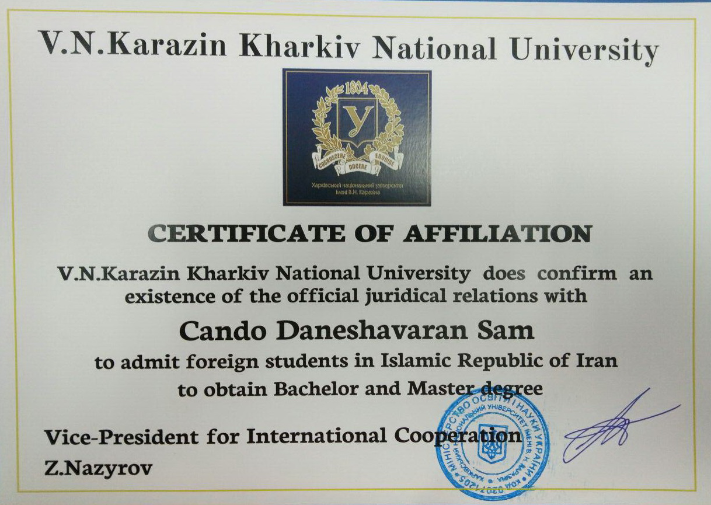
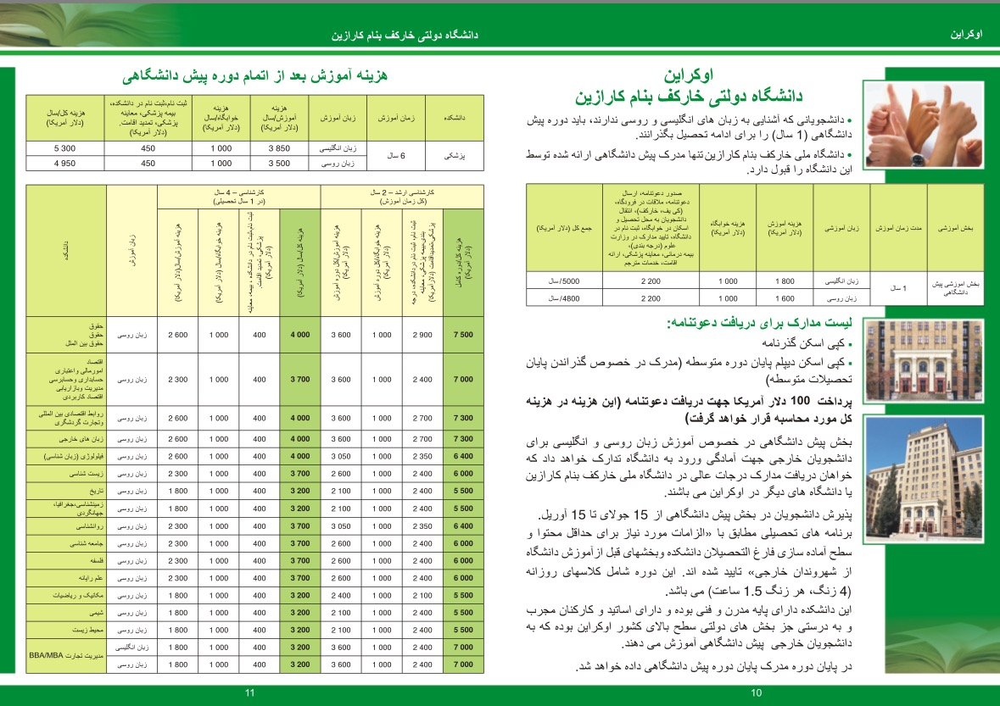
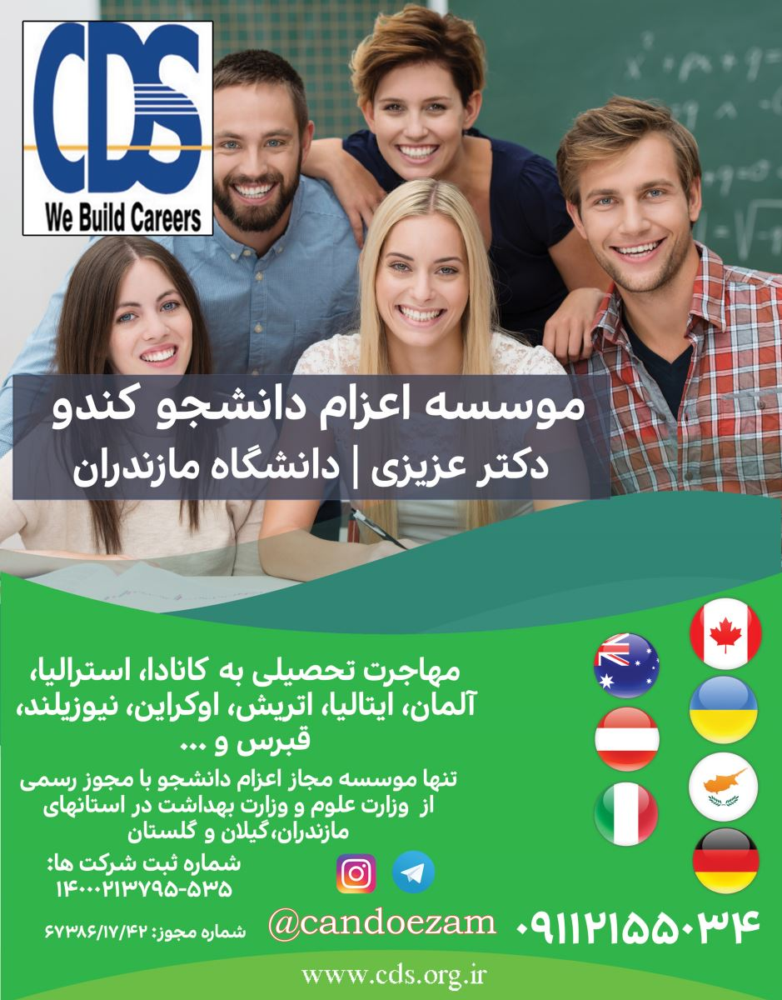
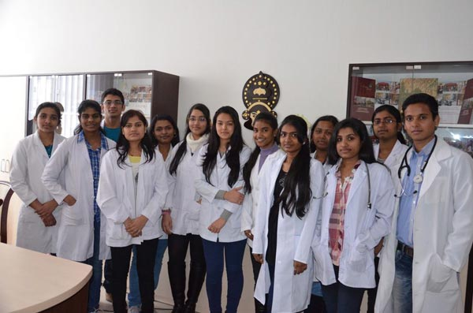
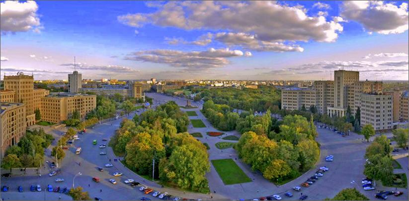

We Build Careers


کندو تنها نماینده رسمی دانشگاه خارکوف در ایران;
برای ورود به وبسایت انگلیسی دانشگاه کارازین کلیک کنید.
برای اطمینان با دفتر بین الملل این دانشگاه تماس بگیرید: info@univer-karazin.kh.ua
تلفن:00380677997730
دانشگاه کارازینا شهر خارکف ( تاسیس دانشکده پزشکی ۱۸۰۲ میلادی)
فقط برای سال تحصیلی ۲۰۱۷-۲۰۱۸
- رشته پزشکی مورد تایید وزارت بهداشت ایران
- به زبان انگلیسی (بدون نیاز به مدرک زبان انگلیسی)
- شهریه سالیانه: ۳۸۵۰ دلار
- دارای ۱۸۰۰۰ هزار دانشجوی خارجی
سایت وزارت بهداشت ایران و نام دانشگاههای خارجی مورد تایید - کلیک کنید.
در لیست جدید وزارت بهداشت که در دیماه سال ۱۳۹۵ در وبسایت این وزارتخانه قرار گرفت رشته پزشکی دانشگاه خارکف
مورد تایید قرار گرفت.

هزینه های زندگی در اوکراین
هزینه های کلی زندگی دانشجویی در کشور اوکراین،هزینه زندگی مشروط به زندگی در خوابگاه حداقل ماهیانه 250 الی 350 دلار در ماه میباشد و در صورت زندگی در خانه بصورت مشترک با سایر دانشجویان حداقل ماهیانه 500 دلار و در صورت زندگی در خانه بصورت مستقل حداقل هزینه ماهیانه 800 الی 1000 دلار در سال 2015-2016 میباشد.هزینه مواد غذایی در شهر کیف اکراین در سال 2016. نکته: قیمتها به گریو(یک دلار= 8 گریو) و بابت هر کیلو می باشد و بسته به شرایط روز قابل تغییر است.هزینه اجاره خوابگاه و مسکن دانشجویی در کشور اوکراینهزینه خوابگاه دانشجویی سالیانه ۱۰۰۰ دلار در پایتخت و بین 80 الی 140 دلار شهر های دیگر است.هزینه اجاره یک سوئیت دانشجوئی 50-100 متر با امکانات رفاهی و مبله دانشجوئی بسته به امکانات و فاصله با دانشگاه و موقعیت شهر ماهیانه500-900 دلار میباشد. شارژ ماهیانه شامل هزینه آب و برق و گاز و وسایل گرمایی و نظافت عمومی ساختمان(به جز تلفن و اینترنت) می باشد که بستگی به مساحت هر آپارتمان دارد ، تابستان 40-20 دلار و زمستان 50-30 دلار می باشد و …
دانشگاههاي اوكراين به دو بخش دولتي و خصوصي تقسيم ميشود كه مدارك دانشگاههاي دولتي در هر مقطع معتبر براي كليه دانشگاههاي دولتي ميباشد. در حال حاضر تعدادي از دانشگاههاي دولتي در اوكراين مورد تاييد وزارت علوم تحقيقات و فن آوري ميباشد كه در اين ميان تعدادزيادي ازاين دانشگاهها در كيف پايتخت اوكراين واقع شده است: اوکراین، بزرگترین کشور اروپا پس از روسیه می باشد.پایتخت این کشور كيف بوده و زبان رسمی مردم اکراین زبانهای روسی و اکراینی است.اوکراینی های داخلی روسیه با استفاده از فرصت حاصله از بروز جنگ جهانی اول و انقلاب روسیه اعلام استقلال کردند (ژانویه 1918) ولی درخارکوفدولت شوروی اوکراین بر پا شد. زمانیکه امپراتوری اتریش – هنگری از هم پاشید (نوامبر 1918) اوکراین و گالیسیا با هم متحد شدند .این کشور تازه پا را لهستان به دنبال ادعاهای ارضی و ارتش سرخ شوروی در حمایت از سوویت خارکوف مورد تهاجم قرار دارند. ارتش سرخ غلبه یافت و در 1922اوکراین یکی از بنیانگذاران اتحاد جماهیر شوروی شد، ولی ناحیه لوف در دست لهستان باقی ماند.
دانشگاه های اين کشور از نظر علمی دارای اعتبار خاصي در اروپا و آمريکا ميباشند .
در زمينه علوم پزشکی دانشگاه دولتی کيف معروف به بوگامولتس، در زمينه علوم فنی و مهندسی دانشگاه پلی تکنيک کيف يا کاپئی و دانشگاه ملی هوا فضای کيف معروف به کيگا، در زمينه مهندسی حمل و نقل دانشگاه ترانسپورت و در زمينه علوم انسانی دانشگاه تاراساشفچنکو از معروفيت و اعتبار خاصی برخوردار می باشد . زبان تدريس در اين کشور انگليسی ، روسي و اوکراينی است و برای آموزش زبان روسی 9 ماه دوره پيش دانشگاهي وجود دارد . البته تدريس به زبان انگليسی هم امکان پذيراست همچنين امكاناتي از قبيل خوابگاه و بيمه دانشجويي جهت رفاه دانشجويان ارائه مي گردد.
شرا يط عمومی تحصيل در دانشگاههای اوکراين
هر دانشجو و يا ديپلم دوره متوسطه و يا فارغ التحصيل مقاطع مختلف که قصد ادامه تحصيل در دانشگاههای اوکراين را داشته باشد ميتواند به شرط داشتن گذرنامه معتبر بدون هيچگونه امتحان ورودی و يا کنکور وارد يکی از دانشگاههای معتبر دولتی اوکراين شده و در رشته مورد علاقه به تحصيل مشغول شود.
کليه علاقه مندان به تحصيل در کشور اوکراين ابتدا بايد يک دوره ده ماهه زبان روسی را در يکی از دانشگاههای دولتی به پايان برساند (بجز تعدادی از دانشگاهها که در برخی رشته های خاص به زبانهای انگليسی و فرانسه نيز تدريس ميشود). مدرک پايان دوره زبان روسی از هر يک از دانشگاههای دولتی در کليه دانشگاههای ديگر معتبر ميباشد. دانشجو دوره کالج زبان را در دو ترم به پايان رسانده و پس از پايان دوره از طرف دانشگاه مدرک رسمی مورد تأييد کليه دانشگاههای اوکراين جهت ادامه تحصيل را دريافت مينمايد. در ترم اول دوره زبان به صورت عمومی با تکيه بر گرامر و مکالمه و در ترم دوم به صورت تخصصی تر متناسب با رشته مورد نظر جهت ادامه تحصيل به دانشجو آموزش داده ميشود. با توجه به اين مطلب اگر دانشجو قبل از شروع ترم دوم تغير عقيده داده و بخواهد در زير گروه ديگری به تحصيل ادامه دهد می تواند با اعلام به اداره آموزش دانشگاه تغير رشته داده و زبان روسی را در رشته مورد علاقه به پايان رسانده و پس از اخذ مدرک زبان در رشته انتخابي (علوم پزشکی و رشته های وابسته و يا علوم فني مهندسي و رشته های وابسته) مشغول به تحصيل شود. برای دانشجويان کالج زبان از بهترين اساتيد اموزش زبان روسی که اشنائی کامل به زبان انگليسی نيز دارند استفاده می شود تا دانشجويان بتوانند به کمک زبان واسطه اسانتر و به طور کامل زبان روسی را بياموزند، در تعدادی از دانشگاهها در رشته های خاص در صورت تمايل دانشجو و تسلط به زبان انگليسی دانشجو ميتواند رشته مورد علاقه اش را به زبان انگليسی ادامه دهد. لازم به ذکر است که دانشجو ميتواند با توجه به علاقه و لحاظ نمودن مسائل اقتصادی و غيره دوره زبان را در يکی از دانشگاههای دولتي شهرستانها, از جمله اودسا, خارکف, دانتسک, و ..., که از لحاظ قيمت نسبت به شهر کيف (مرکز اکراين) ارزانتر ميباشد, با مشورت نماينده مستقر در اکراين, انتخاب نموده و پس از پايان دوره زبان روسی, در دانشگاه شهر مورد نظر ادامه تحصيل دهد. تقويم ترم تحصيلی دانشگاه از اول سپتامبر شروع شده و پس از يک دوره 4/5 ماهه تعطيلات ميان ترم به مدت 15 روز آغاز ميشود. پس از پايان تعطيلات دانشگاه مجدداٌ به کار خود ادامه داده و پس از امتحانات پايان ترم در اواسط ژوئن تعطيلات آغاز ميشود. دوره تعطيلات حدود دو ماه و نيم بوده که در ابتدای سپتامبر سال بعد دانشگاه شروع به کار مينمايد.
دانشجويان دوره زبان ميتوانند از ابتدای سپتامبر در کلاس درس حاضر شده و در صورت تاخير ميبايست در انتهای ترم مدت تاخير را جبران نماید این دانشگاهها تا 15 نوامبر دانشجو میگیرند.
اامتحانات نهایی بعد از اتمام هر ترم به صورت شفاهی بوده و از 5 محاسبه میشود که 5 معادل عالی 4 خوب و 3 قبول و 2 مردود میباشد. در دانشگاههای اوکراین برای دانشجویان خارجی سخت گیری خاصی اعمال نمیشود ولی اگر دانشجویی از لحاظ تحصیلی خیلی ضعیف باشد و بعد از 3 بار امتحان موفق به کسب نمره حد نصاب نشود مجبور به تکرار دوره میباشد و در مورد دانشجویان کوشا امکانات برای کسب مهارتهای اضافه میباشد.

رشته های تحصيلی :
رشته های تحصيلی شامل
تمامی رشته های پزشکی
داروسازی (فعلا مورد تایید وزارت بهداشت ایران نیست)
دندانپزشکی (فعلا مورد تایید وزارت بهداشت ایران نیست)
تمامی رشته های علوم فنی و مهندسی
هنر
موسيقي
نقاشي
مدارک مورد نياز جهت اخذ پذيرش تحصيلی:
اصل پاسپورت معتبر
کپی شناسنامه از تمام صفحات
12 قطعه عکس رنگی پاسپورتی
گواهی صحت سلامت (سازمان انتقال خون)

نشانی:ساری- میدان امام-ساختمان برلیان-طبقه اول-بالای بانک تجارت،واحد شماره 19
لطفا قبل از آمدن به موسسه با کارشناسان موسسه تماس بگیرید
موسسه اعزام دانشجو کندو دکتر عزیزی
با مجوز وزارت علوم
شماره های تماس جهت تعیین وقت
011333675000
09030612326
(زمان حضور آقای دکتر عزیزی: عصر های یک شنبه،سه شنبه و پنج شنبه از ساعت 16 الی 20)
Address:
Kühlwetterstraße 8.
Room Number 0227
52072 Aachen
Germany
Contact:01573 8947230-02418025258
Business Hours:
Mon 7:00PM - 9:30AM
Wed 7:00-9:30PM
Sat 10:00AM-6:30PM
Sun 10:00 AM - 6:30 PM


کلیه حقوق مرتبط به این وبسایت متعلّق به موسسه اعزام دانشجو کندو دانش آوران سام میباشد
cds.org.ir, Copyright©2015, All Rights Reserved
Design by : BOOMHUNK